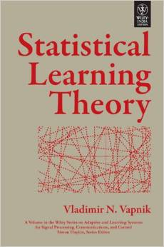

Books – Machine Learning
Pattern Recognition and Machine Learning |
 |
Learning From Data |
Gaussian Processes for Machine Learning |
|  | Statistical Learning Theory |
The Nature of Statistical Learning Theory |
 |
Learning with Kernels: Support Vector Machines, Regularization, Optimization, and Beyond |
 |
An Introduction to Statistical Learning: with Applications in R |
 |
The Elements of Statistical Learning: Data Mining, Inference, and Prediction (2nd Edition) |
Information Theory, Inference, and Learning Algorithms |
Probabilistic Graphical Models: Principles and Techniques |
Graphical Models, Exponential Families, and Variational Inference |
Reinforcement Learning: An Introduction |